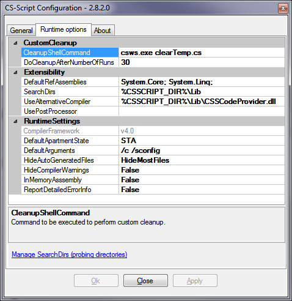

Script execution can be controlled/adjusted through the engine runtime settings. These settings can be viewed/edited with a configuration console.
The configuration console is the utility, which allows to do variety of script engine administrative tasks (installation/uninstallation, enabling shell extensions, enabling integration with Visual Studio, changing runtime behavior, accessing the documentation...).
To start the console execute the following command in command prompt:Target CLR
version
This combo-box allows you to select specific version of the CLR from
the
list of the installed runtimes. The target version of the CLR for the
script execution is controlled by content of the corresponding .config
files (eg. cscs.exe.config). The "default" means the CLR with
the
highest version known at the time of CS-Script release. See MSDN
for details on how to edit .config files. You should be careful when
working with multiple versions of CLR as it can imply some
compatibility restrictions (see CS-Script
version compatibility for details).
dsfds
CSScript.GlobalSettings.UseAlternativeCompiler = "CSSCodeProvider.v3.5.dll";
If you want to avoid setting the alternative compiler at runtime you can use special version of the script engine class library (CSScriptLibrary.v3.5.dll). It was built with C#3.0 compiler (.NET 3.5) and as such can execute C# 3.0 scripts natively. However this assembly cannot be hosted by any earlier versions of CLR (e.g. host application compiled under .NET 1.1).
This tab displays Advanced shell extensions layout. You can find out more about what this Shell Extension is and how it is different to the explorer Simplified Context Menu in the Advanced Shell Extension chapter.
Use Advanced Shell Extensions
Use this check box to enable or disable Advanced Shell
Extension.
Configure Shell Extension
This LinkLabel is used to launch the Advanced Shell Extension configuration utility. This utility allows you to enable/disable particular Shell Extension menu item, edit menu command and change the menu items order.
Open
Visual Studio 2005 integration
This LinkLabel is used to launch the Visual Studio Integration configuration utility. This utility allows you to enable/disable or adjust the level of the CS-Script integration with MS Visual Studio IDE(s) installed on your PC.
Simplified Context Menu
Tab
In this list of supported simplified explorer Context
Menus you
can enable/disable particular one depending on
you preferences.

CleanupShellCommand
Shell command that is executed in order to cleanup any temporary files
created by the script engine. This command is entirely
optional.
Basically it is a custom action triggered by the script engine when
number of consecutive runs (DoCleanupAfterNumberOfRuns)
reached. If this command is set the script engine is not
required
to do any cleanup thus it does the execution in the current AppDomain.
This means that the script can be executed faster (however the fastest
execution can be achieved only with /c
switch). You can use clearTemp.cs
script from the Script
Library as a basic cleanup command
("csws.exe clearTemp.cs").
DoCleanupAfterNumberOfRuns
The number of consecutive runs before CleanupShellCommand would
be invoked.
SerachDirs
Scripts from the Script
Library can be executed or imported by the
script engine without specifying the full script path. You also can
nominate
additional folders which will be used by the script engine
in the same way. It is just a custom version of the "Script
Libraries". All assemblies from SerachDirs are
automatically available for runtime
for loading (see Using .NET assemblies
for details). Multiple search directories should be separated by
semicolon (;) the same way as it is done for the environment variable
PATH. Another, more convenient way of managing Search directories is to
do this with Search Directories utility. you can launch it by clicking
the LinkLabel Manage SearchDirs.
UseAlternativeCompiler
Set this property to the location of the alternative compiler CodeProvider assembly if you want to use non-C# syntax.
DefaultApartmentState
You can control the type of threading model of the the script being
executed by using [STAThread]
or [MTAThread] attributes
in the script code. If the threading model is not specified in the code
it is set to the DefaultApartmentState value of the runtime settings.
DefaultArguments
This value contains default command line switches. For example if /c ("cached" mode)
switch is specified as a default argument, all scripts will be executed
with this switch even if the switch is omitted from the command-prompt
command.
HideAutoGeneratedFiles
By using this setting you can completely (or partially)
remove
auto-generated files from the script directory. This option
(if
used) allows you to maintain very
clean script directories with script files only. All temporary files
(imported scripts, dynamically generated wrappers, script cache) in
this case are
stored in the specially dedicated temp folder. The possible values for
this setting are:
DoNotHide - Do not hide any auto-generated files.
HideMostFiles - Hide the most of the auto-generated files (cache and "imported" files).
HideAll - Hide all
auto-generated files including the files generated by pre/post scripts.
HideCompilerWarningss
If this value is set to True
all compiler warnings are not displayed. This may simplify
navigation in the compiler output.
InMemoryAssembly
If this value is set to True the compiled
script is loaded for the execution not from the
assembly file but rather from it's in-memory copy. This allows
avoiding locking the script assembly file during the
execution.
This
may be usefully in some circumstances, for example if you want
to
delete the compiled script before it's execution is completed. Be
careful when using this setting as your script assembly at
runtime
will have Location
property set to empty string (Assembly.GetExecutingAssembly().Location).
Also this value should be set to False
if for execution of C++ scripts of WWF scripts as CLR expects the
assembly to be present in form of file for this type of applications.
ReportDetailedErrorInfo
If this value is set to True
all errors, which the script engine displays to the user, will
be reported with the exception stack messages. Otherwise, only
the top level exception message is reported.
Note
The
settings are stored in the css_config.xml file in
the CS-Script home directory.
Update
Press Update button to check if any update for CS-Script is available.
Updating process is automated, what eliminates necessity for manual downloading and configuration. Always review the settings in the "Runtime options" tab as in result of the "settings migration" they may contain invalid values (etc. absolute paths).
Support/Help
Click corresponding link to access specific documentation resources or
send feedback emails.
Alternative compilers | Command-line interface | CS-Script version compatibility | Using .NET assemblies